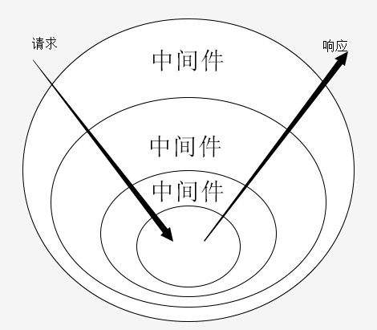

Introduction
[新手指南]
oneQL 是什么？
oneQL 快速入门
oneQL 推荐实践
[基础功能]
目录结构
运行环境
配置
中间件
定时任务
[核心功能]
本地开发
日志功能
接入配置系统
缓存功能
应用部署
安全
[其他接入]
MySQL
MongoDB
Socket.io
TypeScript
静态资源
[进价]
插件开发
多进程模块增强
框架开发
代码风格指南
[社区]
内置插件列表
贡献代码
常见问题
中间件
中间件
oneQL 基于koa，所以中间件和koa的洋葱圈 是一致的。

results matching "
"
No results matching "
"